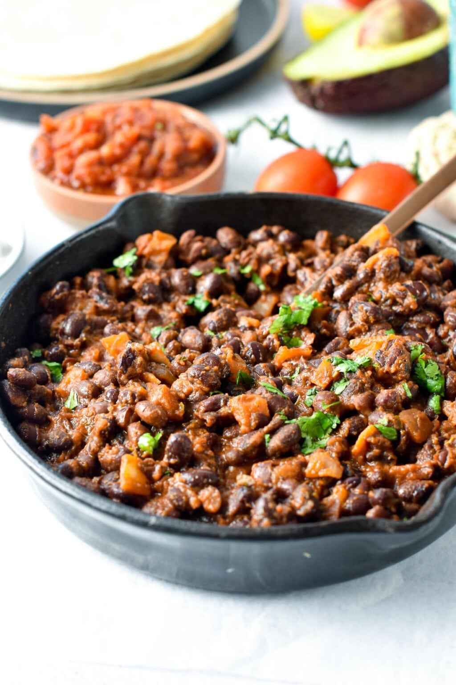

Mexican Beans

Mexican black beans are canned black beans cooked in a blend of Mexican spices.
Of course, you can twist the recipe with a few options, and I will share all my secrets below.
Ingredients
- 1 can black beans (drained)
- 1 can black beans (undrained)
- 1 onion
- 2 tbl olive oil
- 0.5 tsp salt
- 4 cloves garlic
- 2 tsp paprika
- 1 tsp ground cumin
- 2 tsp dried oregano
- 3 tbl tomato paste
- 1 chipotle pepper in adobo sauce
Steps
- In a large non-stick pan, add oil and warm over medium-high heat.
- Add finely chopped onion, cook and stir until fragrant.
- Stir in garlic and spices: oregano, cumin, paprika, and salt, and stir fry for 20 seconds.
- Add in both cans of black beans – one is drained from their juice, the other is not.
- If you like tomato flavor in your beans, add the tomato paste. For spicy beans, add a Chipotle Pepper in Adobo Sauce.
- Stir and cook uncovered for 6-8 minutes until the liquid has evaporated, stir occasionally.
- Just before serving, stir in finely chopped cilantro if you like. Taste and adjust salt and pepper.
- Serve as a filling to vegan tacos, burritos, or enchiladas.